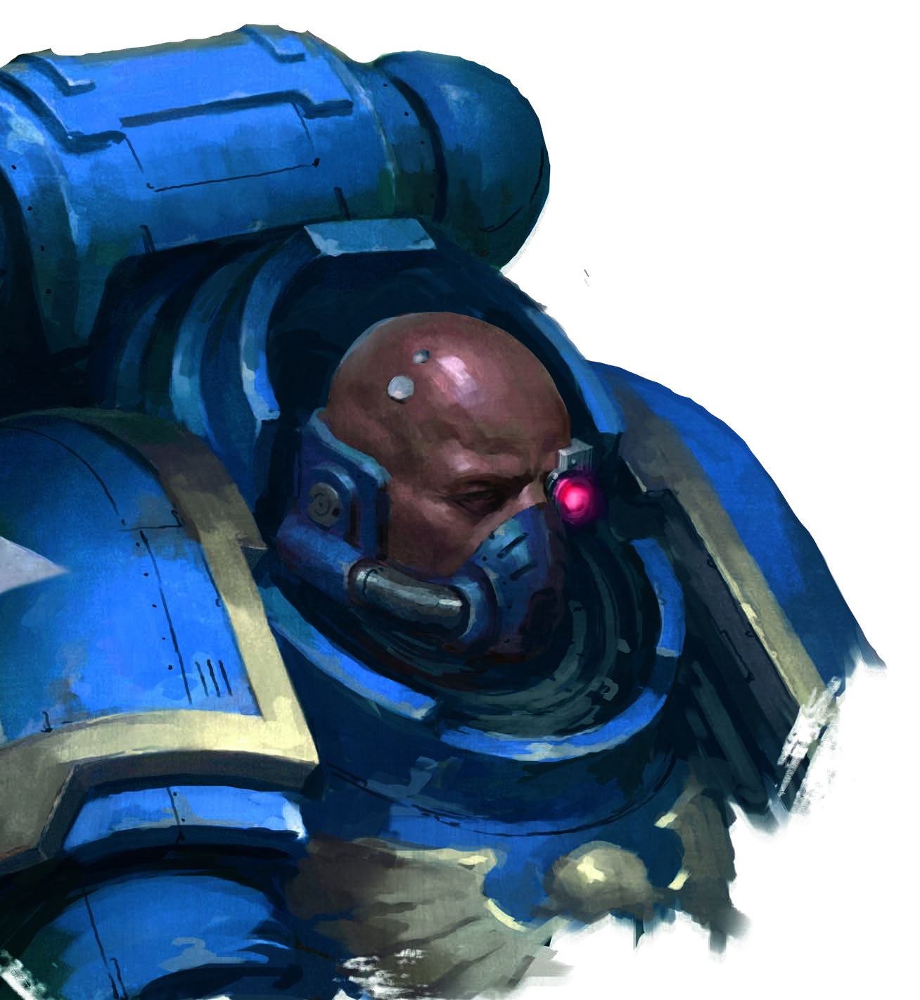
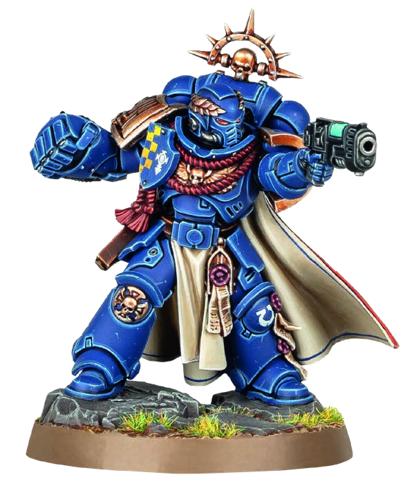
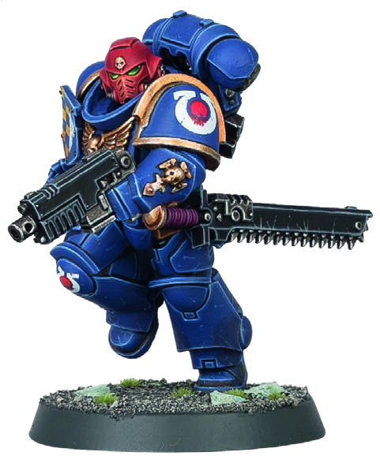
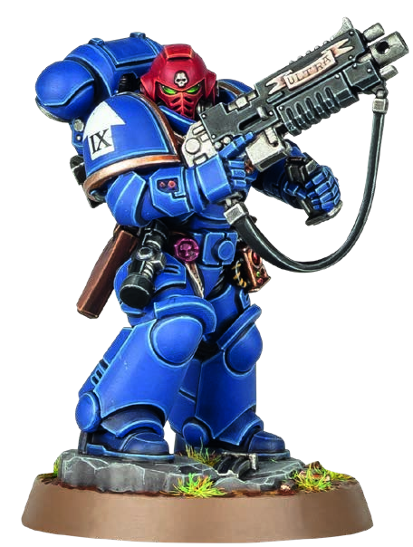
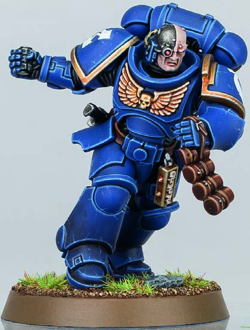
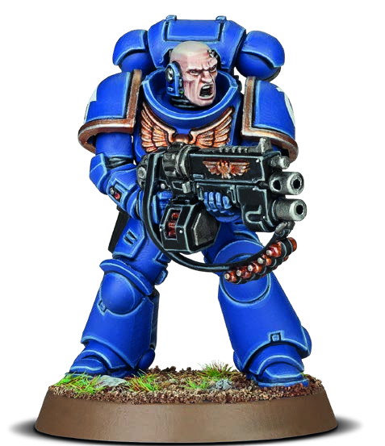
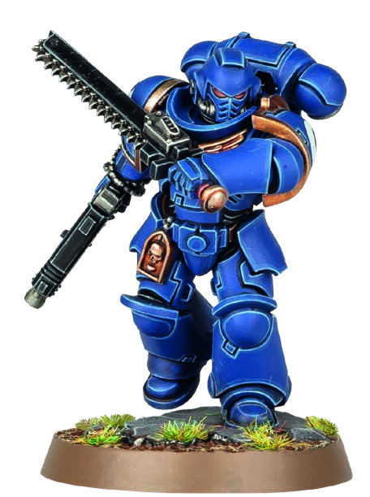
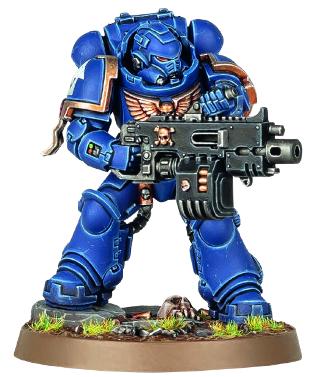

ADEPTUS ASTARTES / SPACE MARINES
殺戮小隊：死亡天使 (ANGELS OF DEATH)
阿斯塔特修會星際戰士是帝國最頂尖的基因強化超人戰士。身穿動力裝甲，手持毀滅性爆彈與等離子武器，死亡天使以鋼鐵般的紀律、戰團戰術與作戰操典主宰任何交戰區域。

戰隊組建名冊 (OPERATIVES)
總計 6 名特工
1. 首領特工 (LEADER)：挑選 1 名
- 星際戰士連長 (Captain)：電漿手槍 + 動力拳套。
- 突擊仲裁軍士 (Assault Sgt)：手持火燄槍/重型爆彈手槍 + 鏈鋸劍/動力拳/動力武器/雷鎚；或選電漿手槍+鏈鋸劍。
- 仲裁軍士 (Intercessor Sgt)：自動爆彈槍/爆彈槍/追獵者 + 鏈鋸劍/徒手/動力拳/動力武器/雷鎚。
- 突擊仲裁擲彈兵 (Grenadier)
- 突擊仲裁戰士 (Assault Warrior)
- 消滅者狙擊手 (Eliminator Sniper)
- 重裝仲裁槍手 (Heavy Gunner)
- 仲裁槍手 (Gunner，附輔助榴彈發射器)
- 仲裁戰士 (Warrior)
陣營特規：阿斯塔特 (ASTARTES)
核心被動
友方特工在其單次啟動期間內，可以執行兩次「射擊」行動，或兩次「格鬥」行動。
- 若執行兩次「射擊」，至少有一次必須選用爆彈武器 (Bolt weapon)。
- 若使用「爆彈狙擊步槍」或「重型爆彈槍」連續射擊兩次，執行第二次射擊必須額外消耗 1 AP。
- 在反制階段均可執行反制行動 (Counteract)，不受其姿態指令（交戰/匿蹤）限制。
作戰原型
安全警戒 (SECURITY)
搜尋與摧毀 (SEEK & DESTROY)
搜尋與摧毀 (SEEK & DESTROY)
爆彈武器定義
武器名稱包含「bolt」字樣之遠程武器。
戰團戰術 (CHAPTER TACTICS) — 戰隊自選 1 主戰術 + 1 次戰術
各戰團皆擁有專屬戰鬥哲學。 挑選戰隊時為全員選定一項主戰術 (Primary)與一項次戰術
(Secondary)，戰鬥中全員享有其加成（同項戰術不可累加；系列聯賽中主次戰術每場需固定）。
1. 凶猛強攻 (AGGRESSIVE)
此特工的所有近戰武器獲得撕裂 (Rending) 武器特規。
2. 決鬥大師 (DUELLER)
進行格鬥或反擊時，你的每個普通成功骰皆可招架抵消對手 1 顆爆擊成功骰（敵方武器具殘暴 Brutal 則除外）。
3. 堅毅果決 (RESOLUTE)
無視針對此特工 APL 屬性的任何扣減修改；且此特工不受敵方武器震擊 (Shock) 特規影響。
4. 潛行獵手 (STEALTHY)
被射擊時若能保留掩體防禦骰，可額外保留 1
顆掩體防禦骰，或直接將該顆保留的掩體骰視為爆擊成功（不與高處地形累加）。
5. 迅捷機動 (MOBILE)
• 執行「撤退 (Fall Back)」行動消耗的 AP 減少 1 點。
• 處於敵方控場範圍內亦可宣告發動「衝鋒 (Charge)」，並允許脫離該控場範圍。
• 處於敵方控場範圍內亦可宣告發動「衝鋒 (Charge)」，並允許脫離該控場範圍。
6. 剛毅頑強 (HARDY)
被敵方射擊時，防禦投骰結果為 5+ 即判定為爆擊成功。
7. 神射精準 (SHARPSHOOTER)
未於同次啟動中執行衝鋒、撤退或重擺陣位而射擊時，爆彈武器獲得精準 1 (Accurate 1) 與 劇烈
(Severe)。
8. 圍城破拆專員 (SIEGE SPECIALIST)
遠程武器獲得飽和壓制 (Saturate)。 此外進行格鬥或反擊時，敵方特工無法進行協同援助 (Cannot
assist)。
戰略策略 (STRATEGY PLOYS) — 戰略階段宣告使用
作戰戰術操典 (COMBAT DOCTRINE)
1 CP
星際戰士嚴格奉行聖典指引，靈活切換作戰姿態壓制敵手。
宣告時選定一種姿態。 本轉折點符合條件之友方特工武器獲得平衡 (Balanced，可重擲 1 顆攻擊骰)：
- 毀滅者操典 (Devastator)：射擊距離自身 超過 6" 的敵方時。
- 戰術操典 (Tactical)：射擊距離自身 6" 以內 的敵方時。
- 突擊操典 (Assault)：進行近戰搏鬥或戰鬥反擊時。
毫無懼色 (AND THEY SHALL KNOW NO FEAR)
1 CP
阿斯塔特修士面對絕境毫無動搖，不屈勇氣超凡入聖。
你可以無視友方特工因重傷 (Injured) 狀態帶來的任何屬性扣減（包含移動力扣減 2" 及武器命中門檻 Hit 惡化 +1 的負面效果）。
彈性適應戰術 (ADAPTIVE TACTICS)
1 CP
戰士們依前線戰局隨機應變，迅速調整作戰節奏。
立即將你目前的次戰術 (Secondary Chapter Tactic) 替換為另一項戰團戰術。 此更換持續至本轉折點結束為止，隨後自動恢復為原本選定的次戰術。
不屈遠征狂瀾 (INDOMITUS)
1 CP
沐浴在不屈時代的遠征聖威中，誓死捍衛帝國疆域。
當敵方特工射擊友方特工時，若你的防禦投骰出現兩顆或更多失敗骰，你可以棄置其中一顆失敗骰，將另一顆失敗骰直接轉化為普通成功骰。
交戰策略 (FIREFIGHT PLOYS) — 交戰階段宣告使用
即時變換操典 (ADJUST DOCTRINE)
1 CP
急促的語音鏈路指令，宣告作戰重心的瞬時轉換。
友方特工啟動期間宣告（執行行動前後皆可）。 若本轉折點曾啟用過「作戰戰術操典」，立即將生效的操典姿態切換為另一種姿態（毀滅者、戰術或突擊）。
超人生理構造 (TRANSHUMAN PHYSIOLOGY)
1 CP
基因改造的強化器官，能硬生抵禦致死打擊。
當敵方射擊友方特工、進行到「投擲防禦骰」步驟時使用。 你可以將其中 1 顆普通成功骰直接升級為爆擊成功骰。
震懾衝鋒突擊 (SHOCK ASSAULT)
1 CP
鏈鋸劍咆哮與身軀的猛烈撞擊，是敵軍防線的喪鐘。
友方特工於同一次啟動中衝鋒後發動「格鬥」時，於結算攻擊骰步驟開始時使用。 直至該次格鬥結束：
- 近戰武器獲得震擊 (Shock) 特規。
- 序列中首次成功打擊 (Strike) 時，額外造成 1 點傷害（上限 7 點）。
復仇之怒 (WRATH OF VENGEANCE)
1 CP
戰友受創激發戰團怒火，催生超越極限的戰力。
當友方特工正在進行反制行動 (Counteract) 時使用。 該特工在該次反制期間，可免費額外執行一項 1 AP 行動（兩項行動不可相同）。
陣營專屬裝備 (FACTION EQUIPMENT)
純潔印記 (PURITY SEALS)
裝備道具
由戰團牧師加持的誓約羊皮紙，激勵佩戴者奮戰不息。
每轉折點限用一次。 特工進行射擊、格鬥或反擊時，若投出兩顆或更多失敗骰，可棄置其中一顆失敗骰，並將另一顆失敗骰轉化為普通成功骰。
戰團聖物匣 (CHAPTER RELIQUARIES)
裝備道具
裝裱著陣亡英雄骸骨的聖匣，提醒戰士恪守誓言。
當佩戴此裝備的友方特工當前持有交戰指令 (Engage order) 時，你可以以 0 CP（免費） 代價對其使用「復仇之怒 (Wrath of
Vengeance)」交戰策略。
近戰胸盾 (TILTING SHIELDS)
裝備道具
胸口的小型騎兵盾能彈開刀劍，化解近身致命威脅。
每轉折點限用一次。 特工格鬥或反擊時，於對手投擲攻擊骰後、重擲前宣告：對手在該序列中小於 6 點的投骰皆不可視為爆擊成功（如致命、撕裂或嚴酷等效果）。
鳥卜掃描儀 (AUSPEX)
裝備道具
多光譜陣列與熱成像儀，輕易穿透掩體鎖定敵影。
每轉折點限用一次。 宣告「射擊」選定目標時使用：直至該次啟動/反制結束，距離該特工 8" 範圍內的敵方特工皆無法獲得隱蔽掩蔽 (Cannot be obscured)。
指揮特工：星際戰士連長 (SPACE MARINE CAPTAIN)

星際戰士連長
SPACE MARINE CAPTAIN
APL3
MOVE6"
SAVE3+
WOUNDS15
| 武器名稱 (NAME) | 攻擊 ATK | 命中 HIT | 傷害 DMG | 武器規則 (WR) |
|---|---|---|---|---|
| 等離子手槍 (標準) / Plasma pistol (standard) | 4 | 3+ | 3 / 5 | 射程 8"穿刺 1 |
| 等離子手槍 (超載) / Plasma pistol (supercharge) | 4 | 3+ | 4 / 5 | 射程 8"過熱致命 5+穿刺 1 |
| 動力拳套 / Power fist | 5 | 3+ | 5 / 7 | 殘暴 (Brutal) |
英雄領袖 (Heroic Leader)：每轉折點可從下列三項效果擇一執行：
• 以 0 CP 使用指定連長為對象的交戰策略（指揮重擲除外）。
• 當你啟動友方特工時，若連長在場且未接戰，可直接宣告「作戰戰術操典」（正常支付 CP，若本轉折點已宣告過則不可使用）。
• 若連長在場且未與敵接戰，可以 0 CP 使用「即時變換操典 (Adjust Doctrine)」。
• 以 0 CP 使用指定連長為對象的交戰策略（指揮重擲除外）。
• 當你啟動友方特工時，若連長在場且未接戰，可直接宣告「作戰戰術操典」（正常支付 CP，若本轉折點已宣告過則不可使用）。
• 若連長在場且未與敵接戰，可以 0 CP 使用「即時變換操典 (Adjust Doctrine)」。
鐵光環 (Iron Halo)：每場戰鬥限用一次。 當攻擊骰對連長造成普通傷害 (Normal Dmg) 時，直接無視該次傷害。
ANGEL OF DEATH, IMPERIUM, ADEPTUS ASTARTES, LEADER, SPACE MARINE CAPTAIN
指揮特工：士官數據卡 (SERGEANT DATACARDS)

突擊仲裁軍士
ASSAULT INTERCESSOR SERGEANT
APL3
MOVE6"
SAVE3+
WOUNDS15
| 武器名稱 (NAME) | 攻擊 ATK | 命中 HIT | 傷害 DMG | 武器規則 (WR) |
|---|---|---|---|---|
| 手持火燄槍 / Hand flamer | 4 | 2+ | 3 / 3 | 射程 6"飽和洪流 1" |
| 重型爆彈手槍 / Heavy bolt pistol | 4 | 3+ | 3 / 4 | 射程 8"爆擊穿刺 1 |
| 等離子手槍 (標準) / Plasma pistol (standard) | 4 | 3+ | 3 / 5 | 射程 8"穿刺 1 |
| 等離子手槍 (超載) / Plasma pistol (supercharge) | 4 | 3+ | 4 / 5 | 射程 8"過熱致命 5+穿刺 1 |
| 鏈鋸劍 / Chainsword | 5 | 3+ | 4 / 5 | — |
| 動力拳套 / Power fist | 5 | 4+ | 5 / 7 | 殘暴 (Brutal) |
| 動力武器 / Power weapon | 5 | 3+ | 4 / 6 | 致命 5+ |
| 雷霆之鎚 / Thunder hammer | 5 | 4+ | 5 / 6 | 震擊 (Shock)擊暈 (Stun) |
操典戰法 (Doctrine Warfare)：【突擊姿態】或【戰術姿態】宣告時，若軍士在場，各享有一次 0 CP
免費宣告。
戰團老兵 (Chapter Veteran)：選派此特工上陣時，為其額外挑選一項專屬戰團戰術（聯賽每場可自由更換）。
ANGEL OF DEATH, IMPERIUM, ADEPTUS ASTARTES, LEADER, ASSAULT INTERCESSOR, SERGEANT

仲裁軍士
INTERCESSOR SERGEANT
APL3
MOVE6"
SAVE3+
WOUNDS15
| 武器名稱 (NAME) | 攻擊 ATK | 命中 HIT | 傷害 DMG | 武器規則 (WR) |
|---|---|---|---|---|
| 自動爆彈步槍 / Auto bolt rifle | 4 | 3+ | 3 / 4 | 洪流 1" |
| 爆彈步槍 / Bolt rifle | 4 | 3+ | 3 / 4 | 爆擊穿刺 1 |
| 追獵者步槍 (架槍) / Stalker (heavy) | 4 | 3+ | 3 / 5 | 重型(僅衝刺 (Dash))致命 5+爆擊穿刺 1 |
| 追獵者步槍 (行進) / Stalker (mobile) | 4 | 3+ | 3 / 4 | — |
| 鏈鋸劍 / Chainsword | 4 | 3+ | 4 / 5 | — |
| 徒手格鬥 / Fists | 4 | 3+ | 3 / 4 | — |
| 動力拳套 / Power fist | 4 | 4+ | 5 / 7 | 殘暴 (Brutal) |
| 動力武器 / Power weapon | 4 | 3+ | 4 / 6 | 致命 5+ |
| 雷霆之鎚 / Thunder hammer | 4 | 4+ | 5 / 6 | 震擊 (Shock)擊暈 (Stun) |
操典戰法：【毀滅者姿態】或【戰術姿態】宣告時，若軍士在場，各享有一次 0 CP 免費宣告。
戰團老兵：佈署時額外獲得一項個人專屬戰團戰術加成。
ANGEL OF DEATH, IMPERIUM, ADEPTUS ASTARTES, LEADER, INTERCESSOR, SERGEANT
特工數據卡：突擊與重裝部隊 (OPERATIVES - PART 1)

突擊仲裁擲彈兵
ASSAULT INTERCESSOR GRENADIER
APL3
MOVE6"
SAVE3+
WOUNDS14
| 武器名稱 (NAME) | 攻擊 ATK | 命中 HIT | 傷害 DMG | 武器規則 (WR) |
|---|---|---|---|---|
| 重型爆彈手槍 / Heavy bolt pistol | 4 | 3+ | 3 / 4 | 射程 8"爆擊穿刺 1 |
| 鏈鋸劍 / Chainsword | 5 | 3+ | 4 / 5 | — |
專精擲彈兵 (Grenadier)：此特工可無限次投擲破片手雷 (Frag) 與破甲手雷 (Krak)，且不計入裝備限制。
投擲手雷時，武器 Hit 命中要求直接改善 1 點（變為 2+ 命中）。
ANGEL OF DEATH, IMPERIUM, ADEPTUS ASTARTES, ASSAULT INTERCESSOR, GRENADIER
突擊仲裁戰士
ASSAULT INTERCESSOR WARRIOR
APL3
MOVE6"
SAVE3+
WOUNDS14
| 武器名稱 (NAME) | 攻擊 ATK | 命中 HIT | 傷害 DMG | 武器規則 (WR) |
|---|---|---|---|---|
| 重型爆彈手槍 / Heavy bolt pistol | 4 | 3+ | 3 / 4 | 射程 8"爆擊穿刺 1 |
| 鏈鋸劍 / Chainsword | 5 | 3+ | 4 / 5 | — |
近身強襲：享有「阿斯塔特」核心特規，單次啟動可宣告執行兩次近戰格鬥。
ANGEL OF DEATH, IMPERIUM, ADEPTUS ASTARTES, ASSAULT INTERCESSOR, WARRIOR

重裝仲裁槍手
HEAVY INTERCESSOR GUNNER
APL3
MOVE5"
SAVE3+
WOUNDS18
| 武器名稱 (NAME) | 攻擊 ATK | 命中 HIT | 傷害 DMG | 武器規則 (WR) |
|---|---|---|---|---|
| 爆彈手槍 / Bolt pistol | 4 | 3+ | 3 / 4 | 射程 8" |
| 重型爆彈槍 (集火) / Heavy bolter (focused) | 5 | 3+ | 4 / 5 | 爆擊穿刺 1 |
| 重型爆彈槍 (掃射) / Heavy bolter (sweeping) | 4 | 3+ | 4 / 5 | 爆擊穿刺 1洪流 1" |
| 徒手格鬥 / Fists | 4 | 3+ | 3 / 4 | — |
重裝火力支撐：厚重的 Gravis 重動力甲賦予 18 點高額生命值；重型爆彈槍兩次連射需額外耗費 1 AP。
ANGEL OF DEATH, IMPERIUM, ADEPTUS ASTARTES, HEAVY INTERCESSOR, GUNNER
特工數據卡：陣地火力與狙擊 (OPERATIVES - PART 2)

仲裁槍手 (榴彈步槍)
INTERCESSOR GUNNER
APL3
MOVE6"
SAVE3+
WOUNDS14
| 武器名稱 (NAME) | 攻擊 ATK | 命中 HIT | 傷害 DMG | 武器規則 (WR) |
|---|---|---|---|---|
| 輔助榴彈槍 (破片) / Aux grenade (frag) | 4 | 3+ | 2 / 4 | 爆炸 2" (Blast 2") |
| 輔助榴彈槍 (破甲) / Aux grenade (krak) | 4 | 3+ | 4 / 5 | 穿刺 1 (Piercing 1) |
| 自動爆彈步槍 / Auto bolt rifle | 4 | 3+ | 3 / 4 | 洪流 1" |
| 爆彈步槍 / Bolt rifle | 4 | 3+ | 3 / 4 | 爆擊穿刺 1 |
| 追獵者步槍 (架槍/行進) / Stalker bolt rifle | 4 | 3+ | 3/5 或 3/4 | 架槍: 重型(僅衝刺 (Dash)),致命5+,爆擊穿刺1 |
| 徒手格鬥 / Fists | 4 | 3+ | 3 / 4 | — |
ANGEL OF DEATH, IMPERIUM, ADEPTUS ASTARTES, INTERCESSOR, GUNNER
仲裁戰士
INTERCESSOR WARRIOR
APL3
MOVE6"
SAVE3+
WOUNDS14
| 武器名稱 (NAME) | 攻擊 ATK | 命中 HIT | 傷害 DMG | 武器規則 (WR) |
|---|---|---|---|---|
| 自動爆彈步槍 / Auto bolt rifle | 4 | 3+ | 3 / 4 | 洪流 1" |
| 爆彈步槍 / Bolt rifle | 4 | 3+ | 3 / 4 | 爆擊穿刺 1 |
| 追獵者步槍 (架槍/行進) / Stalker bolt rifle | 4 | 3+ | 3/5 或 3/4 | 架槍: 重型(僅衝刺 (Dash)),致命5+,爆擊穿刺1 |
| 徒手格鬥 / Fists | 4 | 3+ | 3 / 4 | — |
ANGEL OF DEATH, IMPERIUM, ADEPTUS ASTARTES, INTERCESSOR, WARRIOR

消滅者狙擊手
ELIMINATOR SNIPER
APL3
MOVE7"
SAVE3+
WOUNDS12
| 武器名稱 (NAME) | 攻擊 ATK | 命中 HIT | 傷害 DMG | 武器規則 (WR) |
|---|---|---|---|---|
| 爆彈手槍 / Bolt pistol | 4 | 3+ | 3 / 4 | 射程 8" |
| 狙擊槍 (處決彈) / Executioner | 4 | 2+ | 3 / 4 | 重型(僅衝刺 (Dash))飽和索敵-輕型無聲 |
| 狙擊槍 (破片彈) / Hyperfrag | 4 | 2+ | 2 / 4 | 爆炸 1"重型(僅衝刺 (Dash))無聲 |
| 狙擊槍 (死神彈) / Mortis | 4 | 2+ | 3 / 3 | 毀滅 3重型(僅衝刺 (Dash))穿刺 1無聲 |
| 徒手格鬥 / Fists | 4 | 3+ | 3 / 4 | — |
迷彩披風 (Camo Cloak)：無視敵方飽和壓制 (Saturate) 特規。 天生自帶潛行獵手
(Stealthy) 戰術；若戰隊本就選用該戰術，兩者可同時生效（直接保留兩顆掩體骰：一顆普通與一顆爆擊）。
專用行動：光學瞄具 (OPTICS) — 1 AP
直至此特工下次啟動前射擊時，敵方特工皆無法獲得隱蔽掩蔽 (Cannot be obscured)（控場範圍內不可執行）。
直至此特工下次啟動前射擊時，敵方特工皆無法獲得隱蔽掩蔽 (Cannot be obscured)（控場範圍內不可執行）。
ANGEL OF DEATH, IMPERIUM, ADEPTUS ASTARTES, ELIMINATOR, SNIPER